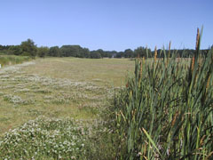

<div class="pages">
  <div data-page="hul5" class="page navbar-fixed toolbar-fixed" >
    <div class="navbar">
      <div class="navbar-inner">
        <div class="left">
          <a href="#" class="link back icon-only"><i class="icon icon-back"></i></a>
          <!-- <a href="#" class="back link icon-only"><i class="icon icon-back"></i></a> -->
        </div>
        <div class="center">Hul 5</div>
        <!-- <div class="right"></div> -->
        <div class="right">
        </div>
      </div>
    </div>
    <div class="page-content" style="padding-top:45px;">
       <div class="content-block">
          <center></center>
          <p>Et virkelig smukt par 5 hul, som under-ordner sig Gurre å i hele venstresiden af hullet. Udfordringerne begynder allerede på tee'et, hvor høje træer og 2 mindre søer giver mange noget at tænke over. Forsøg at ramme fairway i udslaget, da du derved undgår out of bounds i venstre side eller rough i højre samt et par velplacerede birketræer umiddelbart til højre for fairway ca. 210 meter fra tee.</p>
          <center></center>
          <p>Andenslaget bør placeres så langt til venstre på fairway du tør, for at bringe de 2 bunkere før green ud af spil.<br />Stor green som skråner fra bagkant til forkant.</p>
          <p>For lav-handicapperen bør drivet placeres umiddelbart til venstre for den store fairway-bunker. Et godt langt drive vil give dig en udmærket mulighed for at komme på green i 2 slag og dermed chancen for en eagle.</p>
          <p>Uanset hvordan du spiller hullet, må du ikke glemme at nyde dette smukke hul med græssende heste på markerne til venstre, Gurre å og de gamle smukke træer.</p>
          <p>Hulsponsor: <br />
          <br /><br />
          Bænksponsor:<br />
          -LEDIGT-<br />
          </p>
        </div>
    </div>
    </div>
    </div>
  </div>
</div>
